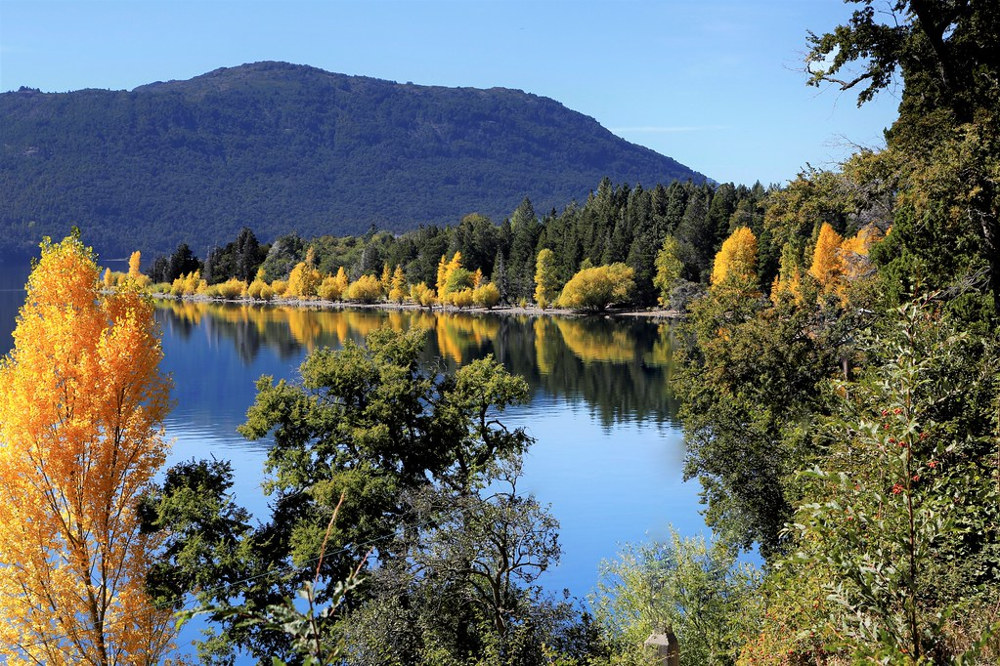
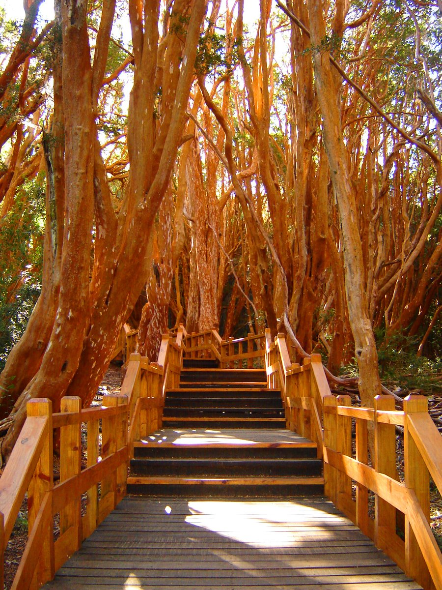
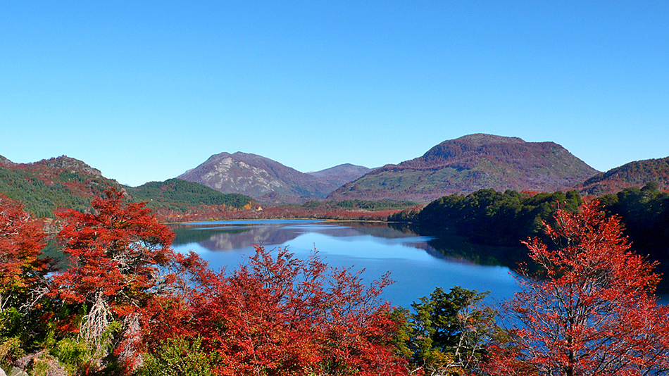
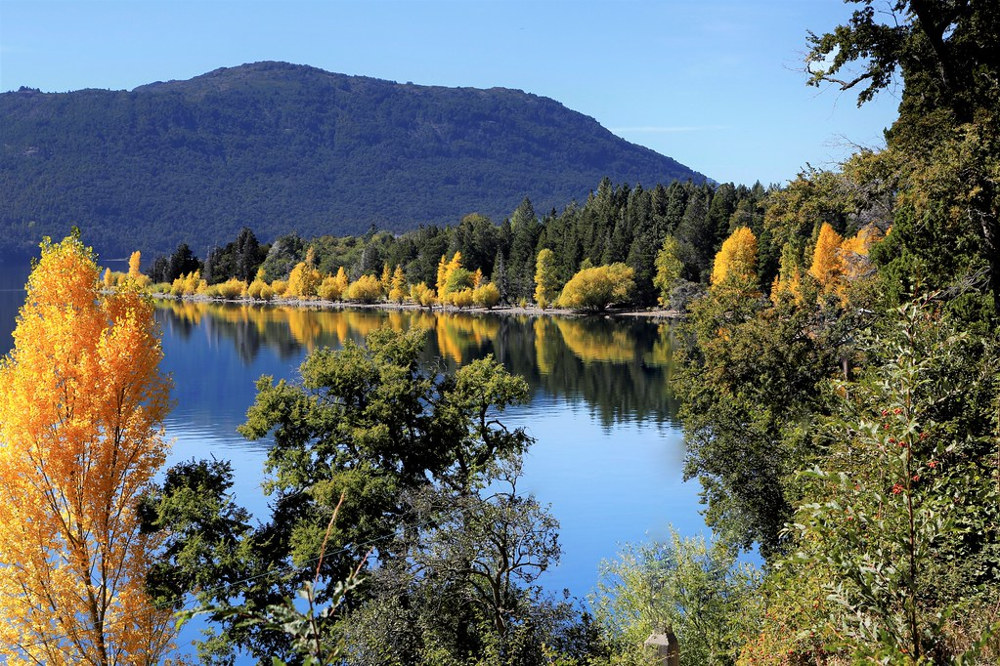
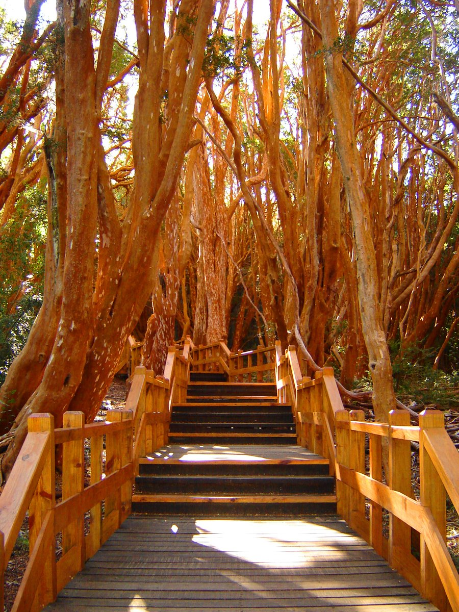
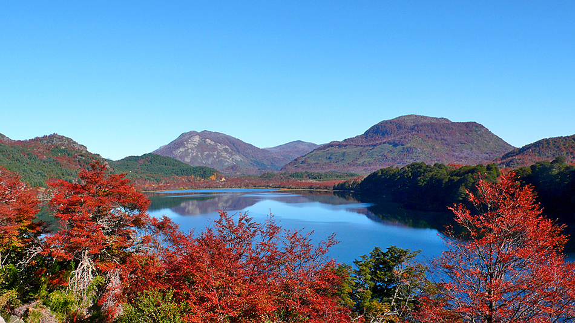

Bariloche y San Martin de los Andes

3 noches en Bariloche / 3 noches en San Martin de los Andes
Incluye:
Transfer
Hotel
Excursion
Coordinador
Bariloche:
Bariloche es uno de los lugares más intensos e increíbles de Argentina. Vas a descubrir vistas impresionantes, lagos, arroyos, ríos de deshielo y montañas. Vas a disfrutar del aire puro, y de los paisajes que se tiñen del color de cada temporada. El reverdecer del generoso sol del verano, el arco iris ocre de los otoños, el estallido de colores en primavera y el brillante manto blanco que cubre los inviernos.
Disfrutar de Bariloche las cuatro estaciones del año. Encontrarás una naturaleza que premia a cada visitante con paisajes maravillosos, desde picos nevados y lengas cobrizas, hasta valles cubiertos de flores y aguas cristalinas.
Variedad de actividades para disfrutar: excursiones tradicionales, paseos lacustres, nieve para todos los gustos, gastronomía, turismo joven, salidas románticas, actividades familiares, aventura, tranquilidad y una agenda cultural diversa.
San Martin de los Andes:
Es una verdadera “Aldea de Montaña”. En la Patagonia Argentina, al sur de la provincia de Neuquén, a orillas del lago Lacar, se encuentra la ciudad de San Martín de los Andes. Un lugar de paz y tranquilidad, por estar rodeado de 400.000 hectáreas del bosques andino-patagónico que pertenecen al Parque Nacional Lanín. Lugar ideal para vacaciones tranquilas o para la aventura, ya sea ski, snowboard en el Cerro Chapelco, pesca, cabalgatas, ruta de los 7 lagos.
Rodeada de montañas con espesos bosques y profundos lagos de origen glaciario, digna poseedora de una belleza inconmensurable y donde la naturaleza muestra todo su esplendor.
 





Opcionales:
Bariloche
- Circuito Chico (Opcional Ascenso Cerro Campanario)
- Cerro Catedral
- Cerro Tronador y Ventisquero Negro
- Navegaciones: Isla Victoria y Bosque de Arrayanes / Puerto Blest con Cascada de los Cantaros
- San Martín de los Andes por ruta de los 7 lagos
San Martin de los Andes
- Villa Quila Quina
- Villa Pehuenia
- Balcones del Lacar – Hua Hum
- Rafting
- Trekking
- Actividades Invernales en Cerro Chapelco